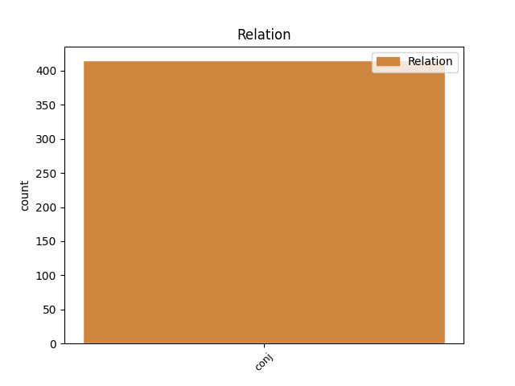
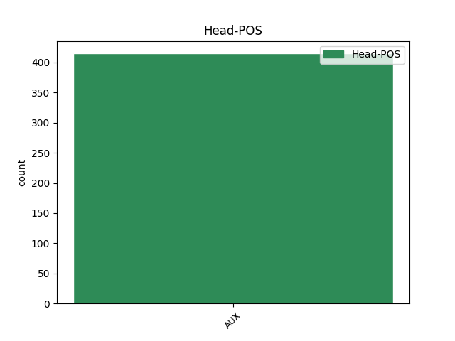
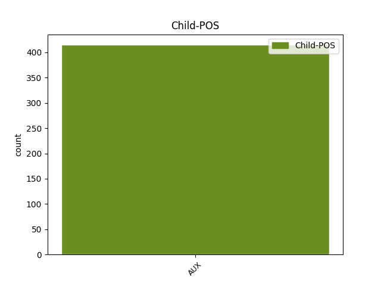

Distribution of features within this leaf



Agreement Rules sorted by frequency.
- When the dependent token is the conjunct(conj) of the head token, and the head token is AUX and the dependent token is AUX.
1 Han haber AUX AUX Mood=Ind|Number=Plur|Person=3|Tense=Pres|VerbForm=Fin 0 _ _ _
2 fallado _ _ _ _ 0 _ _ _
3 las _ _ _ _ 0 _ _ _
4 formas _ _ _ _ 0 _ _ _
5 diplomáticas _ _ _ _ 0 _ _ _
6 y _ _ _ _ 0 _ _ _
7 hay haber AUX AUX Mood=Ind|Number=Sing|Person=3|Tense=Pres|VerbForm=Fin 1 conj _ _
8 que _ _ _ _ 0 _ _ _
9 cambiar _ _ _ _ 0 _ _ _
10 las _ _ _ _ 0 _ _ _
11 una _ _ _ _ 0 _ _ _
12 retirada _ _ _ _ 0 _ _ _
13 a _ _ _ _ 0 _ _ _
14 tiempo _ _ _ _ 0 _ _ _
15 no _ _ _ _ 0 _ _ _
16 siempre _ _ _ _ 0 _ _ _
17 es _ _ _ _ 0 _ _ _
18 una _ _ _ _ 0 _ _ _
19 victoria _ _ _ _ 0 _ _ _
20 , _ _ _ _ 0 _ _ _
21 máxime _ _ _ _ 0 _ _ _
22 cuando _ _ _ _ 0 _ _ _
23 se _ _ _ _ 0 _ _ _
24 estuvo _ _ _ _ 0 _ _ _
25 predicando _ _ _ _ 0 _ _ _
26 durante _ _ _ _ 0 _ _ _
27 meses _ _ _ _ 0 _ _ _
28 la _ _ _ _ 0 _ _ _
29 guerra _ _ _ _ 0 _ _ _
30 santa _ _ _ _ 0 _ _ _
31 contra _ _ _ _ 0 _ _ _
32 la _ _ _ _ 0 _ _ _
33 pérfida _ _ _ _ 0 _ _ _
34 Alemania _ _ _ _ 0 _ _ _
35 y _ _ _ _ 0 _ _ _
36 su _ _ _ _ 0 _ _ _
37 manía _ _ _ _ 0 _ _ _
38 de _ _ _ _ 0 _ _ _
39 resistir _ _ _ _ 0 _ _ _
40 se _ _ _ _ 0 _ _ _
41 a _ _ _ _ 0 _ _ _
42 mantener _ _ _ _ 0 _ _ _
43 los _ _ _ _ 0 _ _ _
44 fondos _ _ _ _ 0 _ _ _
45 estructurales _ _ _ _ 0 _ _ _
46 y _ _ _ _ 0 _ _ _
47 de _ _ _ _ 0 _ _ _
48 cohesión _ _ _ _ 0 _ _ _
49 para _ _ _ _ 0 _ _ _
50 España _ _ _ _ 0 _ _ _
51 hasta _ _ _ _ 0 _ _ _
52 pasado _ _ _ _ 0 _ _ _
53 el _ _ _ _ 0 _ _ _
54 2006 _ _ _ _ 0 _ _ _
55 . _ _ _ _ 0 _ _ _
Disagree Examples:
1 Las _ _ _ _ 0 _ _ _
2 ratas _ _ _ _ 0 _ _ _
3 son ser AUX AUX Mood=Ind|Number=Plur|Person=3|Tense=Pres|VerbForm=Fin 0 _ _ _
4 como _ _ _ _ 0 _ _ _
5 la _ _ _ _ 0 _ _ _
6 mala _ _ _ _ 0 _ _ _
7 conciencia _ _ _ _ 0 _ _ _
8 de _ _ _ _ 0 _ _ _
9 las _ _ _ _ 0 _ _ _
10 sociedades _ _ _ _ 0 _ _ _
11 desarrolladas _ _ _ _ 0 _ _ _
12 , _ _ _ _ 0 _ _ _
13 y _ _ _ _ 0 _ _ _
14 su _ _ _ _ 0 _ _ _
15 sucia _ _ _ _ 0 _ _ _
16 proliferación _ _ _ _ 0 _ _ _
17 será ser AUX AUX Mood=Ind|Number=Sing|Person=3|Tense=Fut|VerbForm=Fin 3 conj _ _
18 siempre _ _ _ _ 0 _ _ _
19 un _ _ _ _ 0 _ _ _
20 negro _ _ _ _ 0 _ _ _
21 pero _ _ _ _ 0 _ _ _
22 preciso _ _ _ _ 0 _ _ _
23 reflejo _ _ _ _ 0 _ _ _
24 de _ _ _ _ 0 _ _ _
25 nuestro _ _ _ _ 0 _ _ _
26 bienestar _ _ _ _ 0 _ _ _
27 material _ _ _ _ 0 _ _ _
28 . _ _ _ _ 0 _ _ _
1 Ha haber AUX AUX Mood=Ind|Number=Sing|Person=3|Tense=Pres|VerbForm=Fin 0 _ _ _
2 llevado _ _ _ _ 0 _ _ _
3 con _ _ _ _ 0 _ _ _
4 empaque _ _ _ _ 0 _ _ _
5 su _ _ _ _ 0 _ _ _
6 ducado _ _ _ _ 0 _ _ _
7 , _ _ _ _ 0 _ _ _
8 a _ _ _ _ 0 _ _ _
9 la _ _ _ _ 0 _ _ _
10 sombra _ _ _ _ 0 _ _ _
11 de _ _ _ _ 0 _ _ _
12 Durero _ _ _ _ 0 _ _ _
13 , _ _ _ _ 0 _ _ _
14 y _ _ _ _ 0 _ _ _
15 era ser AUX AUX Mood=Ind|Number=Sing|Person=3|Tense=Imp|VerbForm=Fin 1 conj _ _
16 duquesa _ _ _ _ 0 _ _ _
17 de _ _ _ _ 0 _ _ _
18 fallera _ _ _ _ 0 _ _ _
19 , _ _ _ _ 0 _ _ _
20 duquesa _ _ _ _ 0 _ _ _
21 montando _ _ _ _ 0 _ _ _
22 a _ _ _ _ 0 _ _ _
23 caballo _ _ _ _ 0 _ _ _
24 , _ _ _ _ 0 _ _ _
25 duquesa _ _ _ _ 0 _ _ _
26 , _ _ _ _ 0 _ _ _
27 la _ _ _ _ 0 _ _ _
28 gran _ _ _ _ 0 _ _ _
29 duquesa _ _ _ _ 0 _ _ _
30 , _ _ _ _ 0 _ _ _
31 en _ _ _ _ 0 _ _ _
32 su _ _ _ _ 0 _ _ _
33 Palacio _ _ _ _ 0 _ _ _
34 de _ _ _ _ 0 _ _ _
35 las _ _ _ _ 0 _ _ _
36 Dueñas _ _ _ _ 0 _ _ _
37 o _ _ _ _ 0 _ _ _
38 en _ _ _ _ 0 _ _ _
39 las _ _ _ _ 0 _ _ _
40 coronaciones _ _ _ _ 0 _ _ _
41 o _ _ _ _ 0 _ _ _
42 fastos _ _ _ _ 0 _ _ _
43 reales _ _ _ _ 0 _ _ _
44 , _ _ _ _ 0 _ _ _
45 o _ _ _ _ 0 _ _ _
46 arrancando _ _ _ _ 0 _ _ _
47 se _ _ _ _ 0 _ _ _
48 a _ _ _ _ 0 _ _ _
49 bailar _ _ _ _ 0 _ _ _
50 sevillanas _ _ _ _ 0 _ _ _
51 , _ _ _ _ 0 _ _ _
52 con _ _ _ _ 0 _ _ _
53 duende _ _ _ _ 0 _ _ _
54 , _ _ _ _ 0 _ _ _
55 en _ _ _ _ 0 _ _ _
56 las _ _ _ _ 0 _ _ _
57 albas _ _ _ _ 0 _ _ _
58 de _ _ _ _ 0 _ _ _
59 aguardiente _ _ _ _ 0 _ _ _
60 . _ _ _ _ 0 _ _ _
1 Amén _ _ _ _ 0 _ _ _
2 del _ _ _ _ 0 _ _ _
3 nacimiento _ _ _ _ 0 _ _ _
4 del _ _ _ _ 0 _ _ _
5 Infante _ _ _ _ 0 _ _ _
6 Don _ _ _ _ 0 _ _ _
7 Felipe _ _ _ _ 0 _ _ _
8 de _ _ _ _ 0 _ _ _
9 Borbón _ _ _ _ 0 _ _ _
10 y _ _ _ _ 0 _ _ _
11 Grecia _ _ _ _ 0 _ _ _
12 , _ _ _ _ 0 _ _ _
13 que _ _ _ _ 0 _ _ _
14 pesó _ _ _ _ 0 _ _ _
15 al _ _ _ _ 0 _ _ _
16 nacer _ _ _ _ 0 _ _ _
17 4.300 _ _ _ _ 0 _ _ _
18 gramos _ _ _ _ 0 _ _ _
19 y _ _ _ _ 0 _ _ _
20 fue _ _ _ _ 0 _ _ _
21 un _ _ _ _ 0 _ _ _
22 acontecimiento _ _ _ _ 0 _ _ _
23 social _ _ _ _ 0 _ _ _
24 , _ _ _ _ 0 _ _ _
25 pues _ _ _ _ 0 _ _ _
26 consiguió _ _ _ _ 0 _ _ _
27 reunir _ _ _ _ 0 _ _ _
28 a _ _ _ _ 0 _ _ _
29 toda _ _ _ _ 0 _ _ _
30 la _ _ _ _ 0 _ _ _
31 familia _ _ _ _ 0 _ _ _
32 real _ _ _ _ 0 _ _ _
33 española _ _ _ _ 0 _ _ _
34 en _ _ _ _ 0 _ _ _
35 Madrid _ _ _ _ 0 _ _ _
36 - _ _ _ _ 0 _ _ _
37 incluida _ _ _ _ 0 _ _ _
38 la _ _ _ _ 0 _ _ _
39 reina _ _ _ _ 0 _ _ _
40 Victoria _ _ _ _ 0 _ _ _
41 Eugenia _ _ _ _ 0 _ _ _
42 , _ _ _ _ 0 _ _ _
43 que _ _ _ _ 0 _ _ _
44 fue ser AUX AUX Mood=Ind|Number=Sing|Person=3|Tense=Past|VerbForm=Fin 0 _ _ _
45 la _ _ _ _ 0 _ _ _
46 madrina _ _ _ _ 0 _ _ _
47 y _ _ _ _ 0 _ _ _
48 no _ _ _ _ 0 _ _ _
49 había haber AUX AUX Mood=Ind|Number=Sing|Person=3|Tense=Imp|VerbForm=Fin 44 conj _ _
50 pisado _ _ _ _ 0 _ _ _
51 tierra _ _ _ _ 0 _ _ _
52 española _ _ _ _ 0 _ _ _
53 desde _ _ _ _ 0 _ _ _
54 el _ _ _ _ 0 _ _ _
55 día _ _ _ _ 0 _ _ _
56 que _ _ _ _ 0 _ _ _
57 abandonó _ _ _ _ 0 _ _ _
58 el _ _ _ _ 0 _ _ _
59 país _ _ _ _ 0 _ _ _
60 camino _ _ _ _ 0 _ _ _
61 del _ _ _ _ 0 _ _ _
62 exilio _ _ _ _ 0 _ _ _
63 - _ _ _ _ 0 _ _ _
64 , _ _ _ _ 0 _ _ _
65 quizá _ _ _ _ 0 _ _ _
66 lo _ _ _ _ 0 _ _ _
67 más _ _ _ _ 0 _ _ _
68 significativo _ _ _ _ 0 _ _ _
69 , _ _ _ _ 0 _ _ _
70 lo _ _ _ _ 0 _ _ _
71 que _ _ _ _ 0 _ _ _
72 puede _ _ _ _ 0 _ _ _
73 dar _ _ _ _ 0 _ _ _
74 nos _ _ _ _ 0 _ _ _
75 idea _ _ _ _ 0 _ _ _
76 de _ _ _ _ 0 _ _ _
77 cómo _ _ _ _ 0 _ _ _
78 eran _ _ _ _ 0 _ _ _
79 las _ _ _ _ 0 _ _ _
80 cosas _ _ _ _ 0 _ _ _
81 por _ _ _ _ 0 _ _ _
82 aquel _ _ _ _ 0 _ _ _
83 entonces _ _ _ _ 0 _ _ _
84 , _ _ _ _ 0 _ _ _
85 es _ _ _ _ 0 _ _ _
86 una _ _ _ _ 0 _ _ _
87 anécdota _ _ _ _ 0 _ _ _
88 que _ _ _ _ 0 _ _ _
89 circuló _ _ _ _ 0 _ _ _
90 como _ _ _ _ 0 _ _ _
91 la _ _ _ _ 0 _ _ _
92 pólvora _ _ _ _ 0 _ _ _
93 y _ _ _ _ 0 _ _ _
94 que _ _ _ _ 0 _ _ _
95 tuvo _ _ _ _ 0 _ _ _
96 lugar _ _ _ _ 0 _ _ _
97 en _ _ _ _ 0 _ _ _
98 la _ _ _ _ 0 _ _ _
99 villa _ _ _ _ 0 _ _ _
100 de _ _ _ _ 0 _ _ _
101 Santos _ _ _ _ 0 _ _ _
102 de _ _ _ _ 0 _ _ _
103 Maimona _ _ _ _ 0 _ _ _
104 , _ _ _ _ 0 _ _ _
105 donde _ _ _ _ 0 _ _ _
106 el _ _ _ _ 0 _ _ _
107 alcalde _ _ _ _ 0 _ _ _
108 de _ _ _ _ 0 _ _ _
109 la _ _ _ _ 0 _ _ _
110 localidad _ _ _ _ 0 _ _ _
111 sorprendió _ _ _ _ 0 _ _ _
112 a _ _ _ _ 0 _ _ _
113 propios _ _ _ _ 0 _ _ _
114 y _ _ _ _ 0 _ _ _
115 extraños _ _ _ _ 0 _ _ _
116 con _ _ _ _ 0 _ _ _
117 un _ _ _ _ 0 _ _ _
118 bando _ _ _ _ 0 _ _ _
119 sobre _ _ _ _ 0 _ _ _
120 la _ _ _ _ 0 _ _ _
121 moral _ _ _ _ 0 _ _ _
122 pública _ _ _ _ 0 _ _ _
123 y _ _ _ _ 0 _ _ _
124 las _ _ _ _ 0 _ _ _
125 buenas _ _ _ _ 0 _ _ _
126 costumbres _ _ _ _ 0 _ _ _
127 , _ _ _ _ 0 _ _ _
128 con _ _ _ _ 0 _ _ _
129 el _ _ _ _ 0 _ _ _
130 que _ _ _ _ 0 _ _ _
131 dicen _ _ _ _ 0 _ _ _
132 pretendía _ _ _ _ 0 _ _ _
133 hacer _ _ _ _ 0 _ _ _
134 frente _ _ _ _ 0 _ _ _
135 a _ _ _ _ 0 _ _ _
136 los _ _ _ _ 0 _ _ _
137 ardores _ _ _ _ 0 _ _ _
138 de _ _ _ _ 0 _ _ _
139 aquel _ _ _ _ 0 _ _ _
140 caluroso _ _ _ _ 0 _ _ _
141 verano _ _ _ _ 0 _ _ _
142 . _ _ _ _ 0 _ _ _
1 La _ _ _ _ 0 _ _ _
2 criatura _ _ _ _ 0 _ _ _
3 estará estar AUX AUX Mood=Ind|Number=Sing|Person=3|Tense=Fut|VerbForm=Fin 0 _ _ _
4 hecha _ _ _ _ 0 _ _ _
5 polvo _ _ _ _ 0 _ _ _
6 y _ _ _ _ 0 _ _ _
7 lo _ _ _ _ 0 _ _ _
8 último _ _ _ _ 0 _ _ _
9 que _ _ _ _ 0 _ _ _
10 quisiera _ _ _ _ 0 _ _ _
11 es ser AUX AUX Mood=Ind|Number=Sing|Person=3|Tense=Pres|VerbForm=Fin 3 conj _ _
12 mortificar _ _ _ _ 0 _ _ _
13 la _ _ _ _ 0 _ _ _
14 . _ _ _ _ 0 _ _ _
1 La _ _ _ _ 0 _ _ _
2 Gauche _ _ _ _ 0 _ _ _
3 divine _ _ _ _ 0 _ _ _
4 y _ _ _ _ 0 _ _ _
5 el _ _ _ _ 0 _ _ _
6 surgimiento _ _ _ _ 0 _ _ _
7 de _ _ _ _ 0 _ _ _
8 pequeñas _ _ _ _ 0 _ _ _
9 editoriales _ _ _ _ 0 _ _ _
10 elitistas _ _ _ _ 0 _ _ _
11 y _ _ _ _ 0 _ _ _
12 abiertas _ _ _ _ 0 _ _ _
13 que _ _ _ _ 0 _ _ _
14 hoy _ _ _ _ 0 _ _ _
15 son ser AUX AUX Mood=Ind|Number=Plur|Person=3|Tense=Pres|VerbForm=Fin 0 _ _ _
16 Tusquets _ _ _ _ 0 _ _ _
17 , _ _ _ _ 0 _ _ _
18 Anagrama _ _ _ _ 0 _ _ _
19 , _ _ _ _ 0 _ _ _
20 y _ _ _ _ 0 _ _ _
21 que _ _ _ _ 0 _ _ _
22 fue ser AUX AUX Mood=Ind|Number=Sing|Person=3|Tense=Past|VerbForm=Fin 15 conj _ _
23 también _ _ _ _ 0 _ _ _
24 La _ _ _ _ 0 _ _ _
25 Gaya _ _ _ _ 0 _ _ _
26 Ciencia _ _ _ _ 0 _ _ _
27 , _ _ _ _ 0 _ _ _
28 editorial _ _ _ _ 0 _ _ _
29 que _ _ _ _ 0 _ _ _
30 Rosa _ _ _ _ 0 _ _ _
31 Regás _ _ _ _ 0 _ _ _
32 fundó _ _ _ _ 0 _ _ _
33 y _ _ _ _ 0 _ _ _
34 dirigió _ _ _ _ 0 _ _ _
35 . _ _ _ _ 0 _ _ _